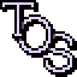

Atari Corporation · 1993
The Falcon030 was Atari's last computer: a 16 MHz 68030 with a DSP for sound, sold from 1992. Its operating system, TOS 4, lived in ROM, so the desktop was there a second after switching on. Version 4.04 was the last build Atari shipped.
The desktop is GEM, the Graphic Environment Manager Digital Research wrote in 1985: a menu bar with Desk, File, View and Options, drives and a trash can on a coloured desktop, and windows with a close box, a full box, scroll arrows and a size box. On the Falcon it came in colour, with a new icon set on the Language Disk.
GEM ran on the PC too, until Apple's 1985 lawsuit made Digital Research change it there. The Atari version kept its overlapping windows and its trash can.
The Falcon's icons came in a resource file, DESKICON.RSC. Every icon has two pictures: the trash lifts its lid and a folder opens when you select it.